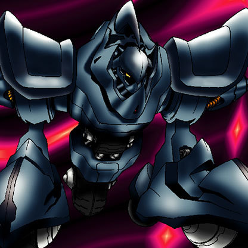

Metal Guardian

STATS
ATK: 1150
DEF: 2150DECK COST
Deck Cost per Card: 33Fusion List (3 Possible Fusions)
- Metal Guardian + Electro-Whip = Metalmorph
- Metal Guardian + Job-Change Mirror = Ryu-Kishin Powered
- Metal Guardian + Machine Conversion Factory = Metalmorph